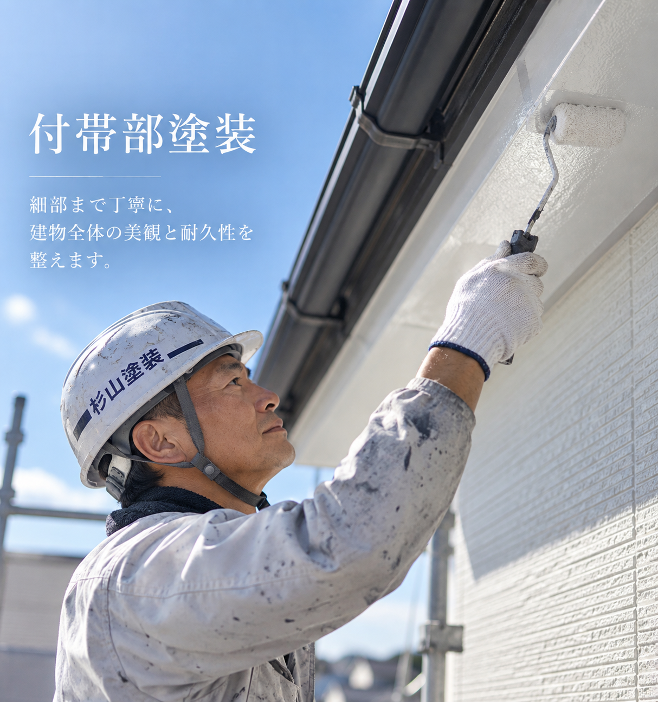

EXTERIOR WALL
外壁塗装
外壁は、毎日雨や紫外線を受けながら建物を守っています。色あせやチョーキング、ひび割れなどを確認し、下地の状態とご希望に合わせて塗料・施工方法をご案内します。
- 高圧洗浄・下地補修を丁寧に実施
- 外壁材や劣化状況に合った塗料を選定
- 色選びや仕上がりイメージも分かりやすくご案内
SERVICE
見た目を整えるだけではなく、住まいを雨・紫外線・劣化から守るための塗装を。状態を確認したうえで、必要な工事だけをご提案します。
EXTERIOR WALL
外壁は、毎日雨や紫外線を受けながら建物を守っています。色あせやチョーキング、ひび割れなどを確認し、下地の状態とご希望に合わせて塗料・施工方法をご案内します。
ROOF
屋根は外壁以上に強い日差しや雨風を受ける場所です。表面だけで判断せず、屋根材の状態を確認しながら必要な補修と塗装を行います。

DETAIL PARTS
雨樋、軒天、破風、雨戸などの付帯部は、建物全体の印象と耐久性を左右します。外壁だけがきれいでも細部が傷んでいると、住まい全体の保護性能は十分とはいえません。
CHECK SIGN
年数だけではなく、住まいに出ている症状から判断することが大切です。
以前より外壁の色が薄く、くすんで見える。
外壁を触ると手に白い粉が付く。
細かなクラックや目地の割れが見られる。
北面や日陰にコケ、藻、黒ずみが増えている。
PROCESS
塗る作業だけでなく、その前の工程を大切にしています。
劣化の場所と程度を確認し、工事の必要性を判断します。
汚れを落とし、ひびや傷みを補修して塗装できる状態に整えます。
密着性と塗膜の厚みを確保するため、工程を省かず施工します。
仕上げ塗装後に細部まで確認し、お引き渡しします。